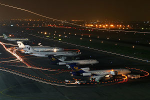
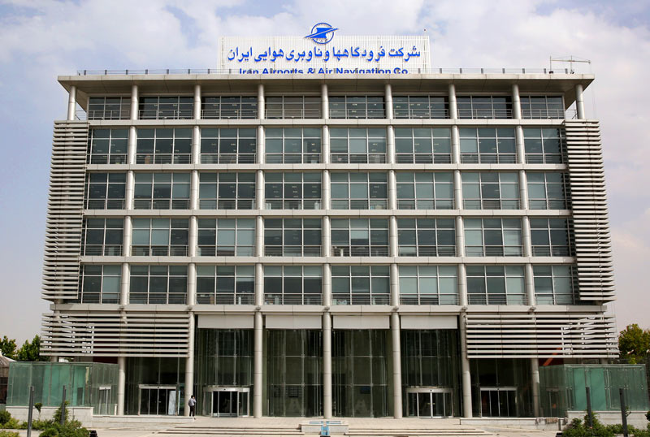
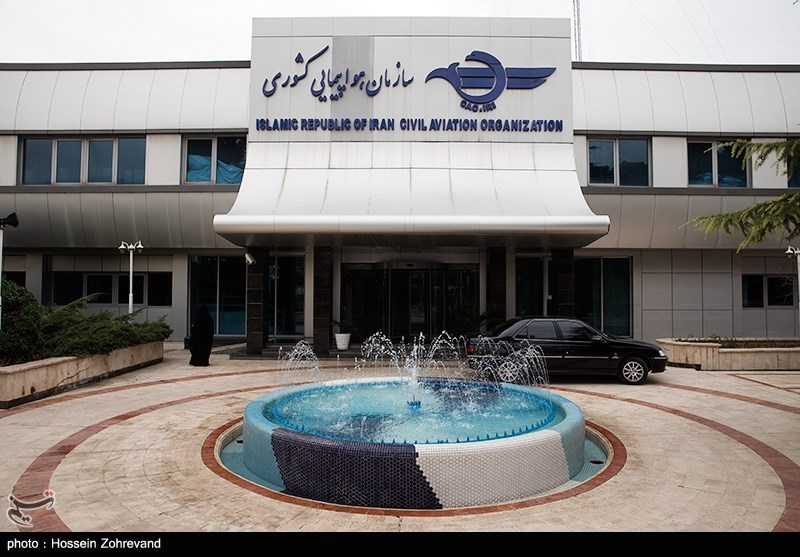

شرکت فرودگاهها و ناوبری هوایی ایران
فرودگاه بین المللی مهرآباد

فرودگاه بینالمللی مهرآباد، یکی از بزرگترین فرودگاههای ایران است که به سال ۱۳۱۷ در غرب شهر تهران ساخته شد و نام خود را از روستای مهرآباد جنوبی که پیشتر در آن منطقه قرار داشت، گرفتهاست. فرودگاه مهرآباد پس از فرودگاه شیراز، فرودگاه بندر لنگه، قلعه مرغی و فرودگاه خرمآباد،[۲] پنجمین فرودگاه ایران میباشد. در سال ۲۰۱۵ میلادی ۱۳۲٬۲۴۵ نشست و برخاست هواپیما در این فرودگاه انجام شد و ۱۱۱٬۱۰۷٬۸۲۲ کیلوگرم بار و ۱۶٬۳۲۷٬۳۵۹ نفر مسافر از طریق آن جابجا شدند.[۱] بیشتر بدانید...
تیک اف هواپیمای ایرباس A330 ایران ایر از فرودگاه منچستر به تهران
| ساعت | شماره پرواز | ایرلاین | مبدا | وضعیت | ترمینال |
|---|---|---|---|---|---|
| 19:00 | FPI7404 | فلای پرشیا | شیراز | طبق برنامه | 6 |
| 19:10 | IRB917 | ایران ایرتور | کیش | تاخیر | 2 |
| 19:30 | FPI7404 | کارون | یزد | طبق برنامه | 2 |
| 19:30 | IRA3410 | ایران ایر | کرمانشاه | طبق برنامه | 2 |
| 19:45 | IRC821 | آسمان | عسلویه | تاخیر | 6 |
شرکت فرودگاهها و ناوبری هوایی ایران

شرکت فرودگاهها و ناوبری هوایی ایران: بر اساس معیارها و مقررات ملی و بینالمللی؛ استمرار خدمترسانی مطلوب، ایمن و مطمئن در صنعت هوانوردی و حمل و نقل هوایی راهبری، مدیریت، نگهداری و توسعه فرودگاهها، سامانههای هوانوردی کشور و مدیریت ترافیک هوایی کشور به عنوان مهمترین ارکان زیرساختی این صنعت در جمهوری اسلامی ایران، بر عهده شرکت فرودگاهها و ناوبری هوایی ایران است؛ که یکی از شرکتهای اصلی تابعه وزارت راه و شهرسازی میباشد.[۱] بیشتر بدانید...
سازمان هواپیمایی کشوری

سازمان هواپیمایی کشوری ایران سازمان دولتی زیرمجموعه وزارت راه و شهرسازی است، که وظیفهٔ تنظیم هوانوردی کشوری (غیرنظامی) با تأکید بر ایمنی و امنیت و همچنین سیاستگذاری، برنامهریزی، تدوین آییننامهها و شیوه نامهها، انتخاب و ساماندهی ناوگان هوایی کشور، ساخت و گسترش فرودگاههای کشور و عقد قراردادهای بینالمللی در امور حملونقل هوایی را به عهده دارد و به عنوان طرف ایرانی ایکائو شناخته میشود.[۲]تهران - فرودگاه مهرآباد - به سمت ترمینال پروازهای داخلی 4 و 6 - سازمان هواپیمایی کشوری[۲] بیشتر بدانید...